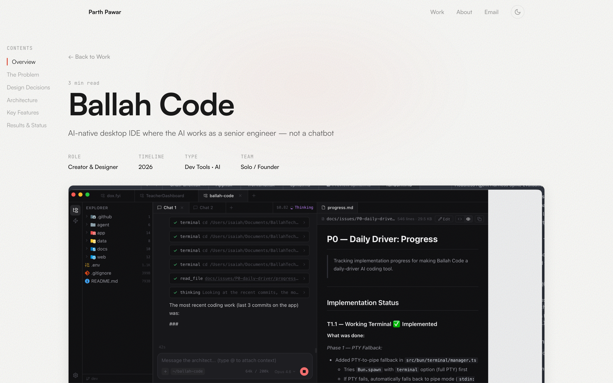

A Development Environment That Treats AI as a Senior Engineer
Ballah Code is a native desktop development environment that treats AI as a trusted senior engineer architect — not a disposable chatbot. The AI plans, writes specifications, delegates to workers, reviews output, and maintains decision records. Core philosophy: context is sacred, documents are first-class, and your time is spent on decisions, not management.
Context Is Disposable and AI Is Replaceable
Existing AI coding tools treat context as disposable and AI as replaceable. Every conversation starts from zero. There’s no persistent memory of why decisions were made, no living documents that evolve with the codebase, and no structured delegation between architect-level thinking and implementation-level execution.
“Every conversation starts from zero. There is no persistent memory of why decisions were made, no living documents that evolve with the codebase.”
Two-Process Architecture, One Seamless Experience
The interface is built around a two-process architecture: a Bun backend handling AI calls, file system operations, and tool execution, connected to a React frontend in a native WebKit webview via typed RPC. The UI centers on a multi-workspace, multi-chat layout — file explorer with git awareness on the left, chat tabs in the center, and an integrated terminal at the bottom. Every interaction is designed to keep the developer in flow state while giving the AI full context.
Native Performance, Minimal Footprint
Built with Electrobun for tiny ~14MB bundles and native performance. Features 17 production-ready AI tools (read, write, search, execute, diagnose, screenshot), a custom agentic loop using direct Anthropic Messages API streaming (not framework abstractions), prompt caching for long contexts, and workspace multiplexing for parallel workstreams. The standalone @ballah/agent package can run in CLI, desktop, or any frontend.
Built for Real Engineering Workflows
Functional Core, Ambitious Roadmap
Core desktop app is functional with all 17 tools operational, streaming AI agent loop, terminal integration, and settings persistence. The project includes an evaluation harness benchmarking against SWE-PolyBench. Living documents, architect/worker delegation, and decision ledger are in the roadmap.